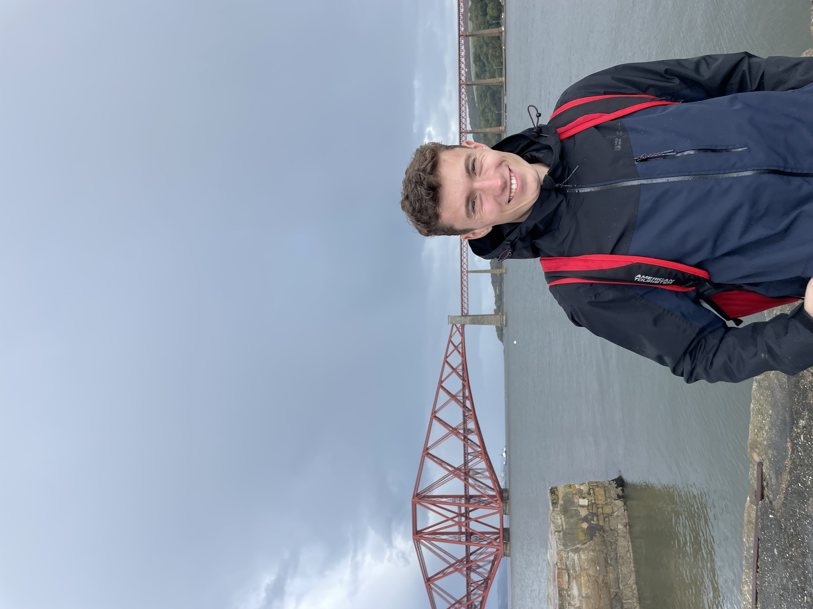

I am a student at the University of Edinburgh currently in my fifth year on a five year course, MPhys Astrophysics. I'm specifically interested in large-scale structure formation, galaxy evolution and astro-particle physics. I am currently applying for PhDs in these fields, and related ones, so I can contribute and pursue my passion and curiosity.
I also have experience working from a young age in the hospitality industry. I worked in a care home for a year before university where I found compassion for the care industry and understands its importance. From a variety of hospitality roles I have also worked at university in (e.g. bartender, cashier) I have developed the ability to balance my time well and keep on top of my work while performing well in these roles. I also partake in a few university clubs, these being the triathlon club, the Edinburgh Scientific Research Association (ESRA) and the Gaelic society (An Comunn Ceilteach). I am on the committee for two of these clubs, in the triathlon club I am the Sponsorship & Kit Officer and I am the head of the physics department in ESRA.